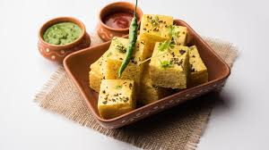

Dhokla
Ingredients
- 1 cup gram flour (besan)
- 1/2 cup yogurt
- 1/2 cup water
- 1 tsp ginger-green chili paste
- 1/4 tsp turmeric powder
- 1 tsp sugar
- 1 tsp salt
- 1 tsp lemon juice
- 1 tsp ENO fruit salt
- 1 tbsp oil
- 1 tsp mustard seeds
- 1 tsp sesame seeds
- 10-12 curry leaves
- 2 green chilies, slit
- 2 tbsp chopped coriander leaves (for garnish)
- 1/4 cup grated coconut (optional, for garnish)
Instructions
- In a bowl, mix gram flour, yogurt, and water to form a smooth batter.
- Add ginger-green chili paste, turmeric powder, sugar, salt, and lemon juice. Mix well.
- Just before steaming, add ENO fruit salt and mix gently. The batter will become frothy.
- Grease a steaming plate with oil and pour the batter into it. Steam for 15-20 minutes.
- Check with a toothpick. If it comes out clean, the dhokla is ready. Allow it to cool slightly.
- Heat oil in a small pan, add mustard seeds, sesame seeds, curry leaves, and green chilies. Pour this tempering over the steamed dhokla.
- Garnish with chopped coriander leaves and grated coconut.
- Cut into squares and serve with green chutney.